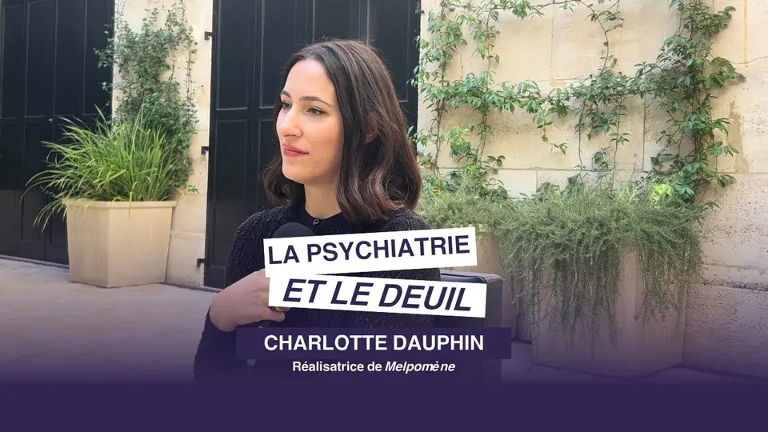
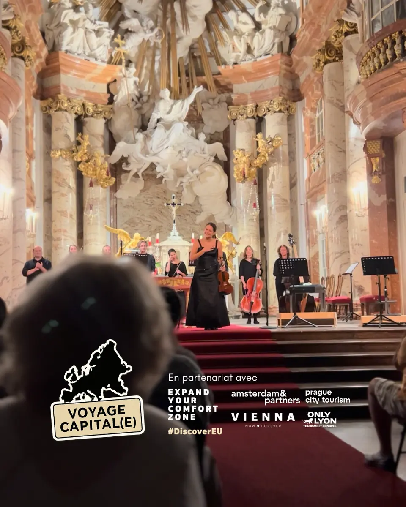
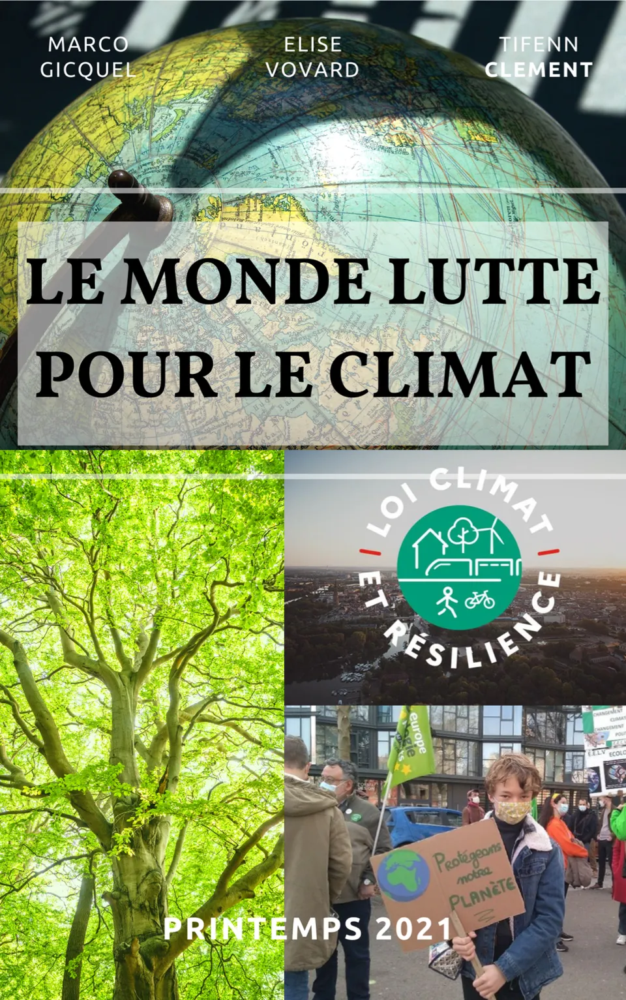
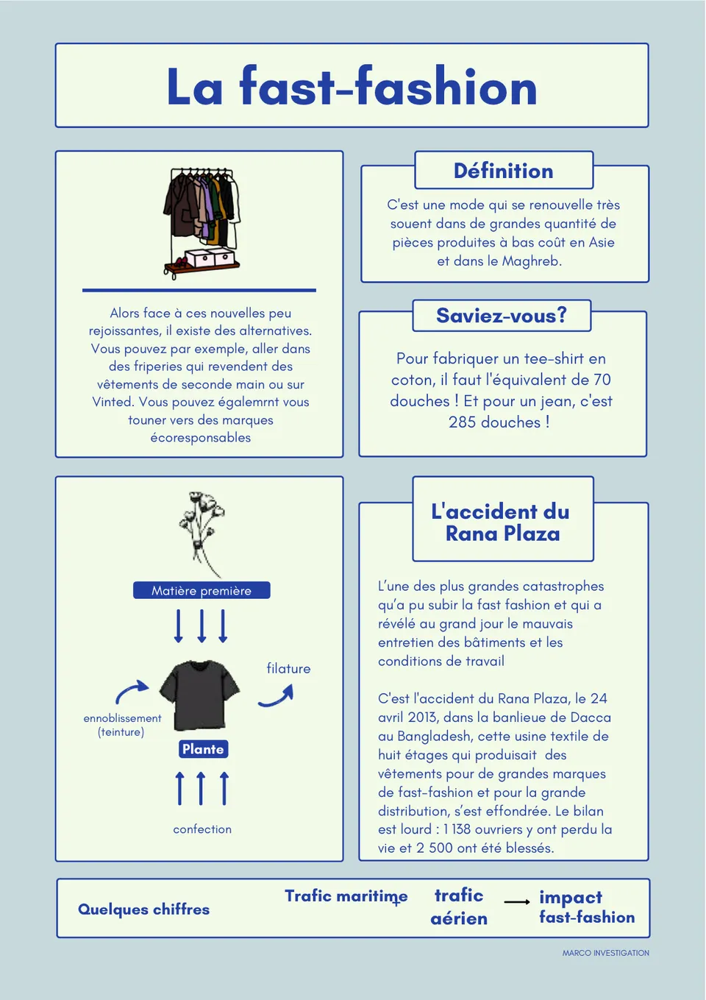
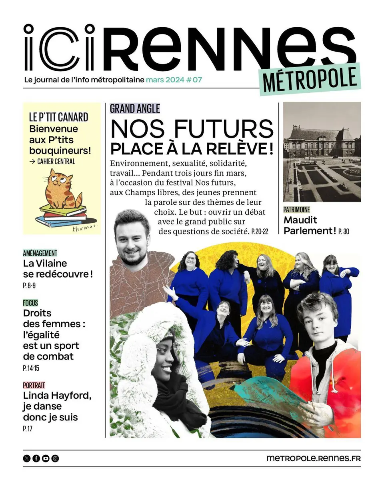
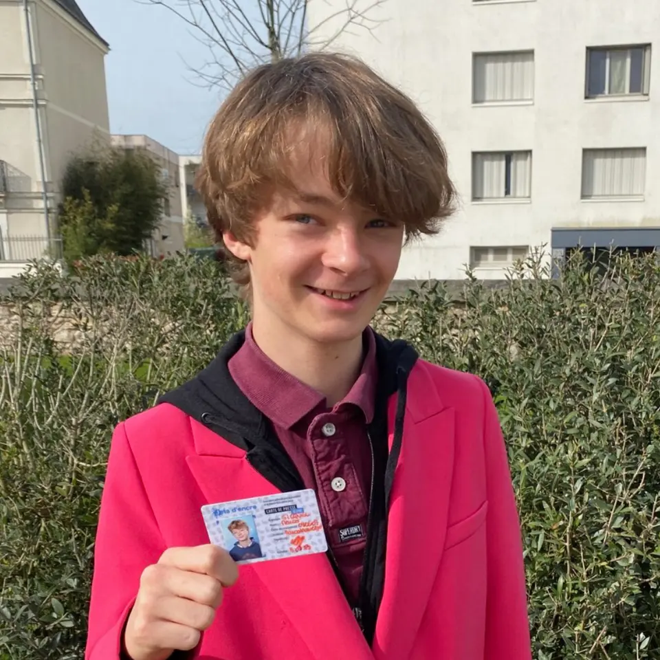
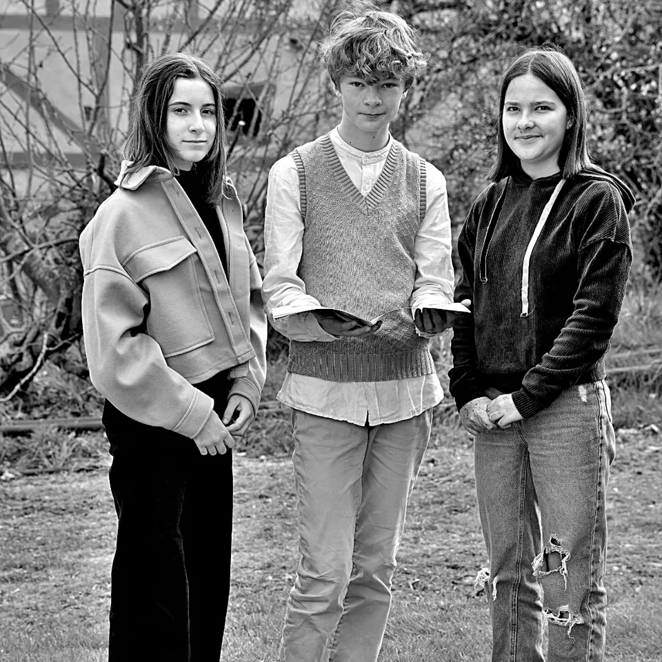
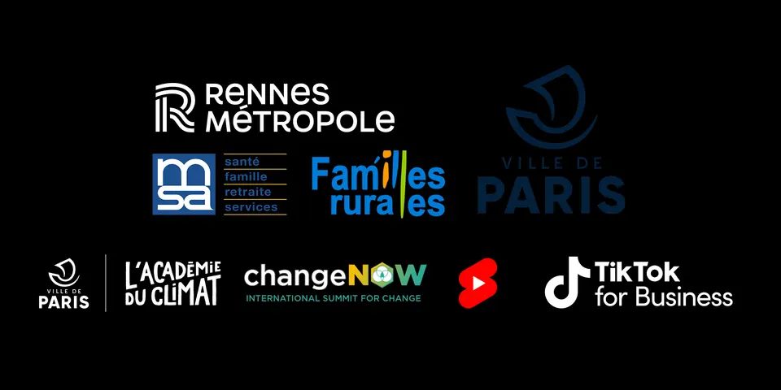
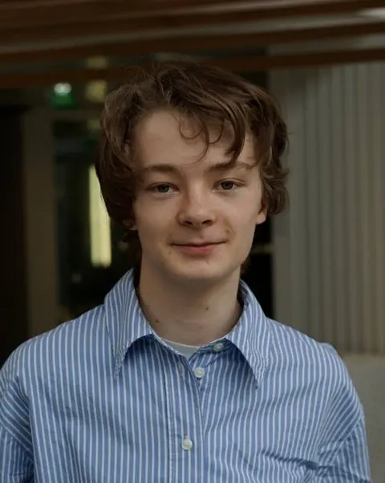

Média indépendant · investigation & solutions
Prix : gratuit · depuis 2021
Marco Investigation
Enquêtes vidéo
Podcast ENGAGEMENT
Magazines
Formations gratuites pour les écoles
Nous avons le pouvoir de changer le monde !
Marco Investigation vous informe sur la société actuelle : société de consommation, discriminations, économie, culture… et sur les alternatives possibles pour améliorer le monde.
Des enquêtes pour dénoncer des pratiques parfois choquantes, puis des solutions pour améliorer le monde de demain. En vidéo, en podcast, en magazine et en classe.
Dépêches
Nouvelle vidéo : Melpomène, la psychiatrie face au deuil
La culture en Europe : plus de 20 partenaires
Podcast ENGAGEMENT : 6 épisodes à écouter
Formation fast-fashion gratuite pour les écoles
À la Une d’Ici Rennes pour le festival Nos Futurs
Édito · journalisme de solutionsp. 2
Dénoncer ce qui choque.
…puis montrer ce qui marche.Marco Investigation vous informe sur la société actuelle et sur les alternatives possibles pour améliorer le monde.
Le média naît en 2021, quand Marco et deux amies participent au concours Kaléïdo’scoop de l’association Jets d’Encre. Leur reportage sur le climat est primé : ils décident de continuer, en donnant une place singulière à l’investigation et au journalisme de solutions, face au climat anxiogène de nombreux médias.
Journalisme
de solutions Lire le portrait du fondateur
de solutions Lire le portrait du fondateur
Dossier · dernier projetp. 3

Découvrez notre dernier projet
La culture en Europe
20+
Un partenariat avec plus de 20 partenaires pour une série de vidéos sur la culture en Europe.
- amsterdam&partners
- Prague City Tourism
- Vienna
- ONLY LYON
- Expand Your Comfort Zone
- #DiscoverEU
Découvrir les vidéos
Liste complète des partenaires à compléter
Les enquêtes · vidéo, podcast, magazine, formationp. 4
Toutes les enquêtes
Choisissez un thème ou un format. Les vidéos s’ouvrent ici, sans quitter la page.
Supplément audio · podcast ENGAGEMENTp. 5
Dernier épisode · 23 mars 2024 · 48 min
Engagement, est-ce une affaire de génération ?
Comment s’engager, et pour quelles raisons ? Une table ronde enregistrée au festival Nos Futurs, organisé avec le journal Le Monde.
Écouter un extrait · 30 s
Le son démarre seulement quand vous cliquez.
Kiosque · les magazinesp. 6
Deux magazines, à lire et à garder

N° 1 · printemps 2021 · 20 pages
Le monde lutte pour le climat
Deux mois d’enquête sur l’origine et la découverte du changement climatique, et des solutions pour améliorer le monde de demain.
Marco Investigation
La fast-fashionles dessous de la fringue
Couverture provisoire
N° 2 · mode et consommation
La fast-fashion
Le second magazine, sur la fast-fashion, est disponible à l’achat dans les applications de livres numériques.
Lien Apple Books à compléter
Lien Google Play à compléter
Écoles · formations gratuitesp. 7
Parler de nos enquêtes en classe
Des formations gratuites et libres de droits, pour que les écoles qui le souhaitent abordent avec leurs élèves les thèmes de nos enquêtes.

Diaporama et quiz
Tous les aspects de l’enquête, avec un petit quiz pour la classe.
Télécharger (PDF)
Fiche récap’ à distribuer
Une version en noir et blanc peut être envoyée sur demande.
Télécharger (PDF)Revue de pressep. 8
La presse parle de nous

En couverture d’Ici Rennes
À l’occasion du festival Nos Futurs, organisé par Les Champs Libres en partenariat avec Le Monde.

Aux Assises internationales du journalisme
La Commission de la carte d’identité des journalistes professionnels interroge Marco sur la carte de presse jeune de Jets d’Encre et sur son média.
Lire l’article
Ciao la fast-fashion
Marco Investigation chez NowU pour parler de fast-fashion et des alternatives qui existent.

200 000 exemplaires, jusque dans le métro
Marco Investigation dans le magazine de Rennes Métropole, distribué jusque dans le métro.
Lire gratuitement
Service presse
pr@marcoinvestigation.org
Kit média en français et en anglais : accès sur demande auprès du service presse.
Demander le kit médiaIls nous accompagnentp. 9
Partenaires
Rennes MétropoleMSAFamilles RuralesVille de ParisL’Académie du ClimatChangeNOWYouTube ShortsTikTok for Business

Portrait · le fondateurp. 10

Marco Gicquel
Un média né d’un concours, devenu un projet
En 2021, Marco et deux amies participent au concours Kaléïdo’scoop, organisé par l’association Jets d’Encre. Leur reportage sur le climat remporte un prix.
Ils décident alors de pérenniser ce média : informer en accordant une place singulière à l’investigation et au journalisme de solutions, qu’ils estiment être l’avenir de l’information.
Présentation actuelle de Marco à compléter (âge, études, équipe)Premier magazine : « Le monde lutte pour le climat ».
Remise des prix Kaléïdo’scoop à l’Hôtel de Ville de Paris.
Lancement du podcast ENGAGEMENT avec Spotify.
Interview de la CCIJP aux Assises internationales du journalisme.
Isabelle Huppert, enregistrée aux 24h de Libé.
À la Une d’Ici Rennes et table ronde au festival Nos Futurs.
La culture en Europe, avec plus de 20 partenaires.
Courrier des lecteursp. 11
Écrivez à la rédaction
Une idée d’enquête, une intervention, un partenariat : on lit tout.
- E-mailcontact@marcoinvestigation.org
- Téléphone06 56 67 63 78
- Pressepr@marcoinvestigation.org
Appels internationaux acceptés : contactez-nous pour la prise en charge des frais.